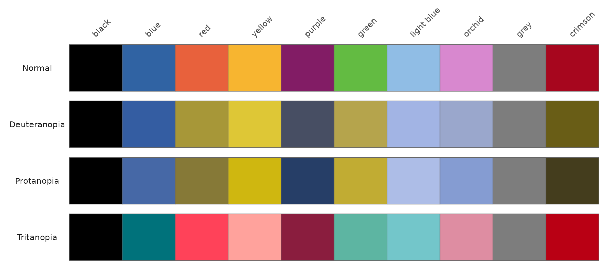

Comparing the palette under colour vision deficiency
Source:vignettes/colour-vision-deficiency.Rmd
colour-vision-deficiency.RmdRoughly 8% of men and 0.5% of women have some form of colour vision
deficiency (CVD). A categorical palette is only useful if its colours
remain distinguishable to those viewers. This vignette shows the ten
discrete poispalette colours as they appear under normal
vision and under the three main types of CVD.
The discrete palette contains ten named colours.
pois_cols()
#> black blue red yellow purple green light blue
#> "#000000" "#3063A3" "#E8613C" "#F7B530" "#821C65" "#63BB42" "#90BDE5"
#> orchid grey crimson
#> "#D888CF" "#7D7D7D" "#A7061E"CVD is simulated with colorspace, which provides
deutan(), protan(), and tritan()
to approximate how colours appear under deuteranopia, protanopia, and
tritanopia. The palette is rendered as swatches, one row per vision
type.
cols <- pois_cols()
sims <- list(
Normal = identity,
Deuteranopia = deutan,
Protanopia = protan,
Tritanopia = tritan
)
swatches <- do.call(rbind, lapply(names(sims), function(vision) {
data.frame(
vision = vision,
colour = names(cols),
hex = sims[[vision]](unname(cols)),
x = seq_along(cols),
stringsAsFactors = FALSE
)
}))
swatches$vision <- factor(swatches$vision, levels = names(sims))
swatches$colour <- factor(swatches$colour, levels = names(cols))
ggplot(swatches, aes(x = x, y = 1, fill = hex)) +
geom_tile(colour = "grey40", linewidth = 0.3) +
scale_fill_identity() +
facet_wrap(~vision, ncol = 1, strip.position = "left") +
scale_x_continuous(
breaks = seq_along(cols),
labels = names(cols),
position = "top",
expand = c(0, 0)
) +
labs(x = NULL, y = NULL) +
theme_minimal() +
theme(
axis.text.x = element_text(angle = 45, hjust = 0, vjust = 0),
axis.text.y = element_blank(),
panel.grid = element_blank(),
strip.text.y.left = element_text(angle = 0),
legend.position = "none"
)
Under deuteranopia and protanopia the blues, green, and light blue
shift toward muddy yellows and blues. Across all three deficiency types
the ten colours remain distinguishable, though pairs such as
blue/light blue are closer than under normal
vision and are best reserved for categories that do not need to be told
apart at a glance.